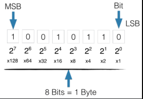

binear stelsel
Het binaire stelsel is een talstelsel dat alleen de cijfers 0 en 1 gebruikt. Het is de basis van computers, omdat schakelaars en transistors twee toestanden hebben: aan (1) en uit (0). Elke positie in een binair getal stelt een macht van 2 voor: van rechts naar links 20,21,22,…20,21,22,…. Voorbeeld: het binaire getal 1011 is 1⋅8+0⋅4+⋅2+1⋅1=11
1⋅8+0⋅4+1⋅2+1⋅1=11 in decimaal. Om een decimaal getal om te zetten naar binair, deel je steeds door 2 en noteer je de resten van onder naar boven

binair stelsel